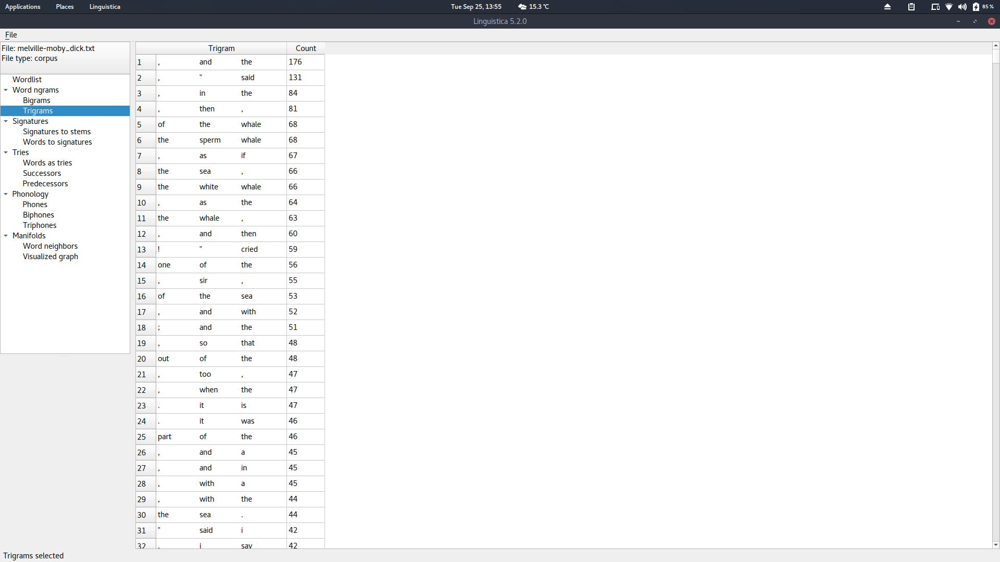

Usare Linguistica di UChicago
Table of Contents
Il software Linguistica di UChicago permette di ottenere bigrammi, trigrammi, affissi, n-neighbors e molto altro con una interfaccia molto semplice ed efficace. Il punto più forte. però, è sicuramente la rappresentazione del manifold ricavato dal corpus.
How to install and start Linguistica
Il software ha una buona documentazione che può essere trovata qui http://linguistica-uchicago.github.io/lxa5/
Per rendere le cose più immediate però, ecco come installare Linguistica (preferibilmente in un virtual environment)
$ pip install PyQt5 $ pip install linguistica
adesso per far partire linguistica basta chiamare il software nel terminale
$ linguistica gui
Load e Run
Cliccando su File possiamo scegliere se caricare un corpus o wordlist. Caricando come corpus uno dei vari libri in txt presenti in NLTK (nel mio caso Moby-Dick di Melville), basta semplicemente andare su File nuovamente e cliccare su Run. Dopo aver eseguito, i risultati saranno disponibili nell'interfaccia.
Bigrammi e Trigrammi
Il risultato con bigrammi e trigrammi è decisamente sporco, caratteri vengono presi in considerazione e sembra non esserci alcun filtraggio di stop-words.
Ciò può comunque essere molto probabilmente modificato facilmente nel codice del software.

Signatures
Questa sezione mostra gli affissi ed i loro stems, si possono visualizzare i risultati per affissi o per radici. I risultati con l'inglese sembrano molto buoni ed interessanti, ho provato con l'italiano ma il corpus che avevo era dicisamente pieno di rumore e i risultati, nonostante buoni, erano decisamente influenzati dalla presenza di link e stringhe nel corpus.
Manifolds
Questa è la mia sezione preferita di Linguistica. La sezione Manifolds offre la wordlist del corpus in ordine di frequenza e gli N neighbors più frequenti per ogni parola, cioè le parole che più frequentemente compaiono vicino alla keyword. Visualized graph, infine, offre il bel grafico del manifold che può essere salvato.
C'è da notare però che, almeno nel mio caso, il salvataggio del grafico non è del tutto chiaro al primo tentativo, perchè non si ottiene alcun feedback o richiesta di path per il salvataggio. Ho trovato, dopo un pò di ricerca, il file salvato in una cartella nascosta .linguistica nella mia home directory. Il grafico è salvato come un file HTML al quale è associato il file JS che produce il grafico.

In the following link it is possible to see the actual interactive representation of the manifold with the novel Moby-Dick.